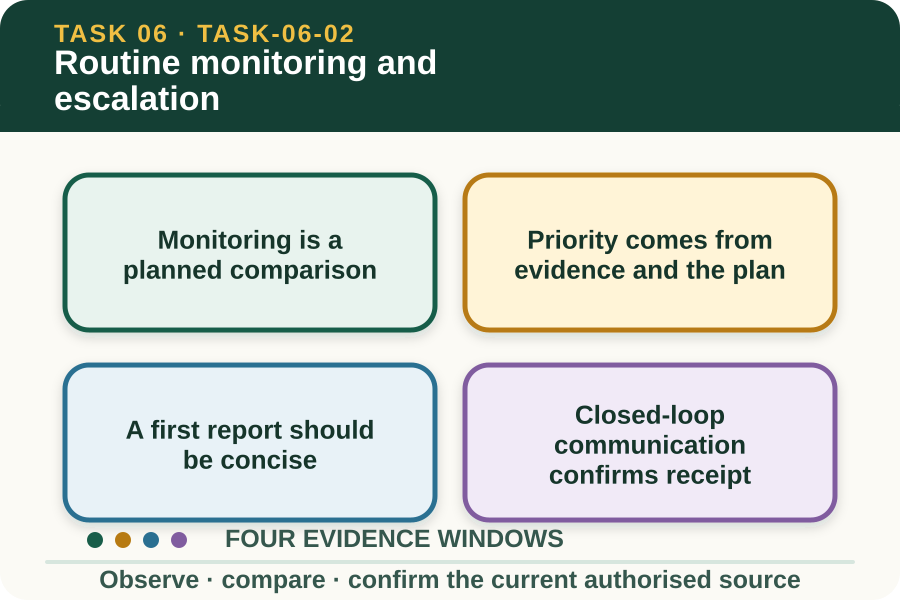

Classroom presentation · 8 slides
Routine monitoring and escalation
Task 6 · 1 of 8
Routine monitoring and escalation
Use a repeatable observation pattern and choose when, how and to whom a concern is reported.

Speaker notes
Teaching move (web-deck purpose): Use the module visual and the fictional worked example to move students from observation to a source-led decision. Ask students to name the evidence, the authority gap and the next safe communication step. Misconception and help: Monitoring improves when its identity, context and fields stay traceable. Ask whether two records describe the same subject in a comparable way. Applied action: Audit a monitoring sequence. Examine four fictional monitoring entries, identify the reliable trend, mark missing or non-comparable fields and compose a twenty-second escalation message. Do not infer a cause or close the concern yourself. Boundary: This supplementary learning draws on mapped AHCLSK222 concepts. Current signed TAS and RTO documents control cohort delivery, assessment and competency decisions; current workplace procedures, supervision and authorised sources control real work. [Sources] - Source basis: AHCLSK222 Release 1 requirements to check livestock regularly, recognise and report poor health, injury or abnormal behaviour, monitor post-treatment and report abnormalities. Current workplace schedules, contacts, thresholds and response pathways remain authoritative. - Visual visual-task-06-02: Generated locally from accepted Stage 05 module headings; no external image copied. - Course visual manifest: work/pi/visuals/visual-manifest.json
Task 6 · 2 of 8
Map the learning
- Monitoring is a planned comparison
- Priority comes from evidence and the plan
- A first report should be concise
Retrieve: What makes routine livestock monitoring useful for comparison?
Speaker notes
Teaching move (learning map): Use the module visual and the fictional worked example to move students from observation to a source-led decision. Ask students to name the evidence, the authority gap and the next safe communication step. Misconception and help: Monitoring improves when its identity, context and fields stay traceable. Ask whether two records describe the same subject in a comparable way. Applied action: Audit a monitoring sequence. Examine four fictional monitoring entries, identify the reliable trend, mark missing or non-comparable fields and compose a twenty-second escalation message. Do not infer a cause or close the concern yourself. Boundary: This supplementary learning draws on mapped AHCLSK222 concepts. Current signed TAS and RTO documents control cohort delivery, assessment and competency decisions; current workplace procedures, supervision and authorised sources control real work. [Sources] - Source basis: AHCLSK222 Release 1 requirements to check livestock regularly, recognise and report poor health, injury or abnormal behaviour, monitor post-treatment and report abnormalities. Current workplace schedules, contacts, thresholds and response pathways remain authoritative. - Visual visual-task-06-02: Generated locally from accepted Stage 05 module headings; no external image copied. - Course visual manifest: work/pi/visuals/visual-manifest.json
Task 6 · 3 of 8
Notice the evidence
Monitoring is a planned comparison
Routine monitoring uses a defined schedule, identified animals or groups and consistent record fields. The authorised workplace plan sets the frequency, observation point, baseline and people responsible for each check.
Consistency helps reveal change over time, but no schedule guarantees that an issue will wait until the next check. Unexpected observations are reported through the current escalation path when they arise.
Priority comes from evidence and the plan
A learner considers the observable change, how many animals are involved, whether the pattern is new or worsening, and whether the current plan identifies a prompt reporting trigger. These facts support escalation.
The learner does not invent a clinical severity rating. Where urgency is uncertain, communicate the evidence immediately to the designated person and let the authorised process determine the response.
Speaker notes
Teaching move (theory idea 1): Use the module visual and the fictional worked example to move students from observation to a source-led decision. Ask students to name the evidence, the authority gap and the next safe communication step. Misconception and help: Monitoring improves when its identity, context and fields stay traceable. Ask whether two records describe the same subject in a comparable way. Applied action: Audit a monitoring sequence. Examine four fictional monitoring entries, identify the reliable trend, mark missing or non-comparable fields and compose a twenty-second escalation message. Do not infer a cause or close the concern yourself. Boundary: This supplementary learning draws on mapped AHCLSK222 concepts. Current signed TAS and RTO documents control cohort delivery, assessment and competency decisions; current workplace procedures, supervision and authorised sources control real work. [Sources] - Source basis: AHCLSK222 Release 1 requirements to check livestock regularly, recognise and report poor health, injury or abnormal behaviour, monitor post-treatment and report abnormalities. Current workplace schedules, contacts, thresholds and response pathways remain authoritative. - Visual visual-task-06-02: Generated locally from accepted Stage 05 module headings; no external image copied. - Course visual manifest: work/pi/visuals/visual-manifest.json
Task 6 · 4 of 8
Use the source boundary
A first report should be concise
A strong first report answers who or which group, what changed, when and where it was observed, what context matters and which source or earlier record was used for comparison.
Avoid lengthy theories that bury the observation. State uncertainty openly, including whether an identifier, duration, baseline or environmental detail still needs verification by the designated authorised person.
Closed-loop communication confirms receipt
Escalation is safer when the receiver acknowledges the message and clarifies the next authorised action. If the usual contact is unavailable, use the current workplace escalation route rather than choosing an unofficial substitute.
The website cannot name a property's contacts, emergency sequence or veterinary arrangements. Those details belong in the current induction, workplace plans and direct supervisor directions for that specific property.
Speaker notes
Teaching move (theory idea 2): Use the module visual and the fictional worked example to move students from observation to a source-led decision. Ask students to name the evidence, the authority gap and the next safe communication step. Misconception and help: Monitoring improves when its identity, context and fields stay traceable. Ask whether two records describe the same subject in a comparable way. Applied action: Audit a monitoring sequence. Examine four fictional monitoring entries, identify the reliable trend, mark missing or non-comparable fields and compose a twenty-second escalation message. Do not infer a cause or close the concern yourself. Boundary: This supplementary learning draws on mapped AHCLSK222 concepts. Current signed TAS and RTO documents control cohort delivery, assessment and competency decisions; current workplace procedures, supervision and authorised sources control real work. [Sources] - Source basis: AHCLSK222 Release 1 requirements to check livestock regularly, recognise and report poor health, injury or abnormal behaviour, monitor post-treatment and report abnormalities. Current workplace schedules, contacts, thresholds and response pathways remain authoritative. - Visual visual-task-06-02: Generated locally from accepted Stage 05 module headings; no external image copied. - Course visual manifest: work/pi/visuals/visual-manifest.json
Task 6 · 5 of 8
Connect evidence to action
Document the direction received
After reporting, record who received the concern, when it was acknowledged and any direction that belongs within the learner's role. Use exact enterprise language where the authorised form supplies it.
Do not write that the concern is resolved unless the current process confirms that outcome. A referral may remain open while authorised people gather further information.
Review monitoring quality
Monitoring records can be reviewed for missing identifiers, inconsistent fields, unexplained gaps, different observation conditions and vague language. Improving record quality supports future comparison and communication.
A high quiz score does not show that a learner can monitor livestock independently or meet assessment requirements. Practical performance remains controlled, supervised and assessed through the current RTO process.
Speaker notes
Teaching move (theory idea 3): Use the module visual and the fictional worked example to move students from observation to a source-led decision. Ask students to name the evidence, the authority gap and the next safe communication step. Misconception and help: Monitoring improves when its identity, context and fields stay traceable. Ask whether two records describe the same subject in a comparable way. Applied action: Audit a monitoring sequence. Examine four fictional monitoring entries, identify the reliable trend, mark missing or non-comparable fields and compose a twenty-second escalation message. Do not infer a cause or close the concern yourself. Boundary: This supplementary learning draws on mapped AHCLSK222 concepts. Current signed TAS and RTO documents control cohort delivery, assessment and competency decisions; current workplace procedures, supervision and authorised sources control real work. [Sources] - Source basis: AHCLSK222 Release 1 requirements to check livestock regularly, recognise and report poor health, injury or abnormal behaviour, monitor post-treatment and report abnormalities. Current workplace schedules, contacts, thresholds and response pathways remain authoritative. - Visual visual-task-06-02: Generated locally from accepted Stage 05 module headings; no external image copied. - Course visual manifest: work/pi/visuals/visual-manifest.json
Task 6 · 6 of 8
Retrieve and check
What makes routine livestock monitoring useful for comparison?
- Consistent identifiers, fields, timing context and authorised baselines.
- Replacing missing entries with what probably happened.
- Using a different description style at every check.
Teacher reveal
Correct. Consistency lets authorised reviewers see meaningful change and data gaps.
Ask whether two records describe the same subject in a comparable way.
Speaker notes
Teaching move (retrieval): Use the module visual and the fictional worked example to move students from observation to a source-led decision. Ask students to name the evidence, the authority gap and the next safe communication step. Misconception and help: Monitoring improves when its identity, context and fields stay traceable. Ask whether two records describe the same subject in a comparable way. Applied action: Audit a monitoring sequence. Examine four fictional monitoring entries, identify the reliable trend, mark missing or non-comparable fields and compose a twenty-second escalation message. Do not infer a cause or close the concern yourself. Boundary: This supplementary learning draws on mapped AHCLSK222 concepts. Current signed TAS and RTO documents control cohort delivery, assessment and competency decisions; current workplace procedures, supervision and authorised sources control real work. [Sources] - Source basis: AHCLSK222 Release 1 requirements to check livestock regularly, recognise and report poor health, injury or abnormal behaviour, monitor post-treatment and report abnormalities. Current workplace schedules, contacts, thresholds and response pathways remain authoritative. - Visual visual-task-06-02: Generated locally from accepted Stage 05 module headings; no external image copied. - Course visual manifest: work/pi/visuals/visual-manifest.json Use option-specific feedback after the learner commits to an answer.
Task 6 · 7 of 8
Construct a source-led response
Prepare a short escalation message for a fictional repeated livestock observation, including one missing-data limitation and the confirmation you need from the receiver.
- The identified animal or group is…
- Across the recorded checks, I observed…
- The relevant time and context are…
- The missing or uncertain information is…
- I am reporting this to…
- Please confirm receipt and…
Success criteria
- Summarises a traceable pattern accurately
- States uncertainty without filling gaps
- Uses a clear authorised reporting destination
- Does not diagnose or recommend intervention
Speaker notes
Teaching move (guided written response): Use the module visual and the fictional worked example to move students from observation to a source-led decision. Ask students to name the evidence, the authority gap and the next safe communication step. Misconception and help: Monitoring improves when its identity, context and fields stay traceable. Ask whether two records describe the same subject in a comparable way. Applied action: Audit a monitoring sequence. Examine four fictional monitoring entries, identify the reliable trend, mark missing or non-comparable fields and compose a twenty-second escalation message. Do not infer a cause or close the concern yourself. Boundary: This supplementary learning draws on mapped AHCLSK222 concepts. Current signed TAS and RTO documents control cohort delivery, assessment and competency decisions; current workplace procedures, supervision and authorised sources control real work. [Sources] - Source basis: AHCLSK222 Release 1 requirements to check livestock regularly, recognise and report poor health, injury or abnormal behaviour, monitor post-treatment and report abnormalities. Current workplace schedules, contacts, thresholds and response pathways remain authoritative. - Visual visual-task-06-02: Generated locally from accepted Stage 05 module headings; no external image copied. - Course visual manifest: work/pi/visuals/visual-manifest.json
Task 6 · 8 of 8
Close the loop
Audit a monitoring sequence
Examine four fictional monitoring entries, identify the reliable trend, mark missing or non-comparable fields and compose a twenty-second escalation message. Do not infer a cause or close the concern yourself.
- Name the strongest evidence in the scenario.
- Explain the decision or referral it supports.
- State which current source or authorised person controls real work.
Boundary: This supplementary learning draws on mapped AHCLSK222 concepts. Current signed TAS and RTO documents control cohort delivery, assessment and competency decisions; current workplace procedures, supervision and authorised sources control real work.
Speaker notes
Teaching move (exit and application): Use the module visual and the fictional worked example to move students from observation to a source-led decision. Ask students to name the evidence, the authority gap and the next safe communication step. Misconception and help: Monitoring improves when its identity, context and fields stay traceable. Ask whether two records describe the same subject in a comparable way. Applied action: Audit a monitoring sequence. Examine four fictional monitoring entries, identify the reliable trend, mark missing or non-comparable fields and compose a twenty-second escalation message. Do not infer a cause or close the concern yourself. Boundary: This supplementary learning draws on mapped AHCLSK222 concepts. Current signed TAS and RTO documents control cohort delivery, assessment and competency decisions; current workplace procedures, supervision and authorised sources control real work. [Sources] - Source basis: AHCLSK222 Release 1 requirements to check livestock regularly, recognise and report poor health, injury or abnormal behaviour, monitor post-treatment and report abnormalities. Current workplace schedules, contacts, thresholds and response pathways remain authoritative. - Visual visual-task-06-02: Generated locally from accepted Stage 05 module headings; no external image copied. - Course visual manifest: work/pi/visuals/visual-manifest.json